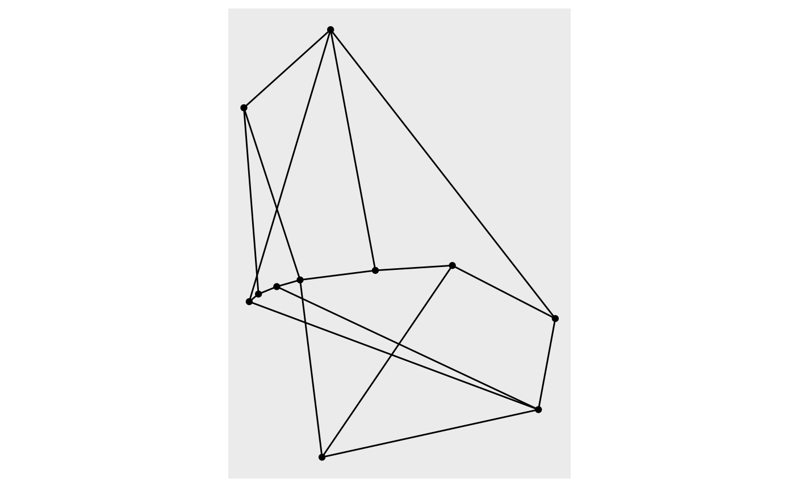
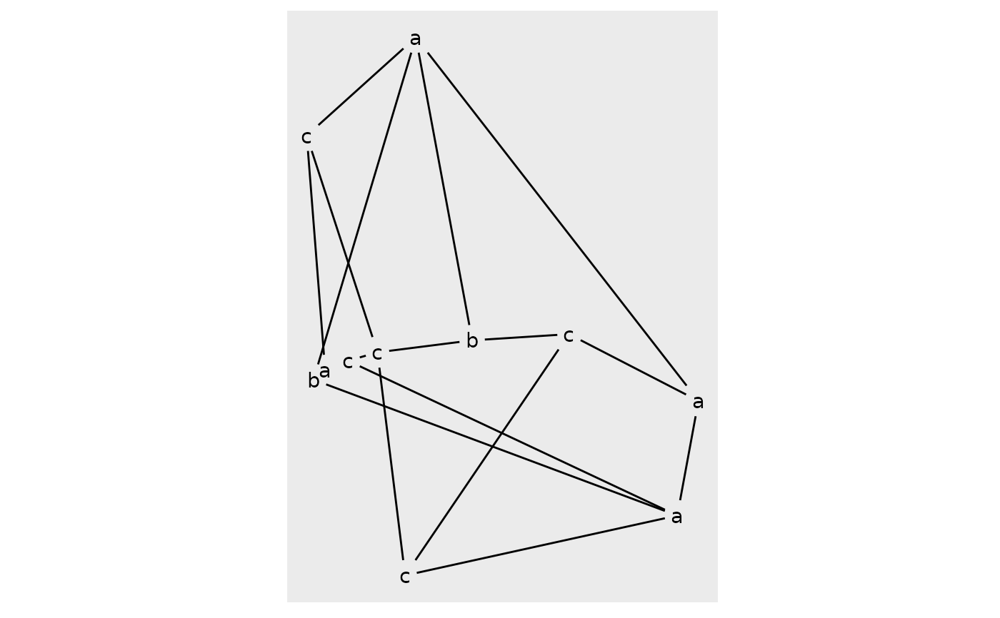
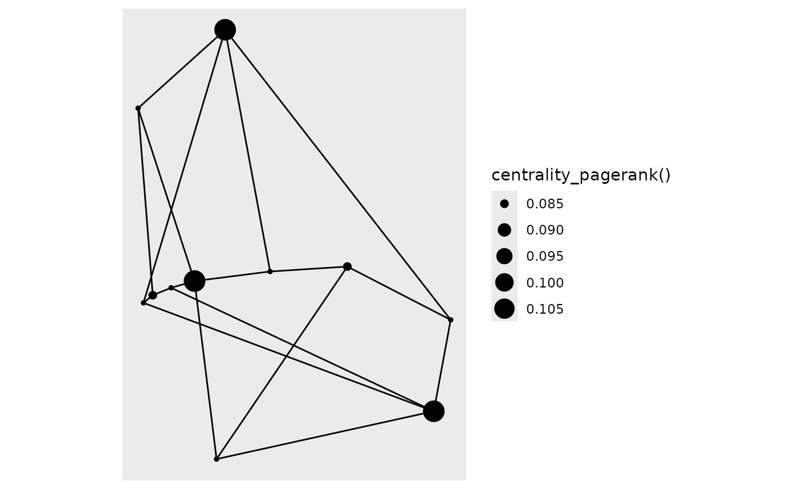

This function is intended to quickly show an overview of your network data. While it returns a ggraph object that layers etc can be added to it is limited in use and should not be used as a foundation for more complicated plots. It allows colour, labeling and sizing of nodes and edges, and the exact combination of layout and layers will depend on these as well as the features of the network. The output of this function may be fine-tuned at any release and should not be considered stable. If a plot should be reproducible it should be created manually.
autograph(graph, ...)
# S3 method for default
autograph(
graph,
...,
node_colour = NULL,
edge_colour = NULL,
node_size = NULL,
edge_width = NULL,
node_label = NULL,
edge_label = NULL
)An object coercible to a tbl_graph
arguments passed on to methods
Colour mapping for nodes and edges
Size/width mapping for nodes and edges
Label mapping for nodes and edges
library(tidygraph)
#>
#> Attaching package: ‘tidygraph’
#> The following object is masked from ‘package:stats’:
#>
#> filter
gr <- create_notable('herschel') %>%
mutate(class = sample(letters[1:3], n(), TRUE)) %E>%
mutate(weight = runif(n()))
# Standard graph
autograph(gr)

# Adding node labels will cap edges
autograph(gr, node_label = class)
#> Warning: Computation failed in `stat_edge_link()`:

# Use tidygraph calls for mapping
autograph(gr, node_size = centrality_pagerank())

# Trees are plotted as dendrograms
iris_tree <- hclust(dist(iris[1:4], method = 'euclidean'), method = 'ward.D2')
autograph(iris_tree)